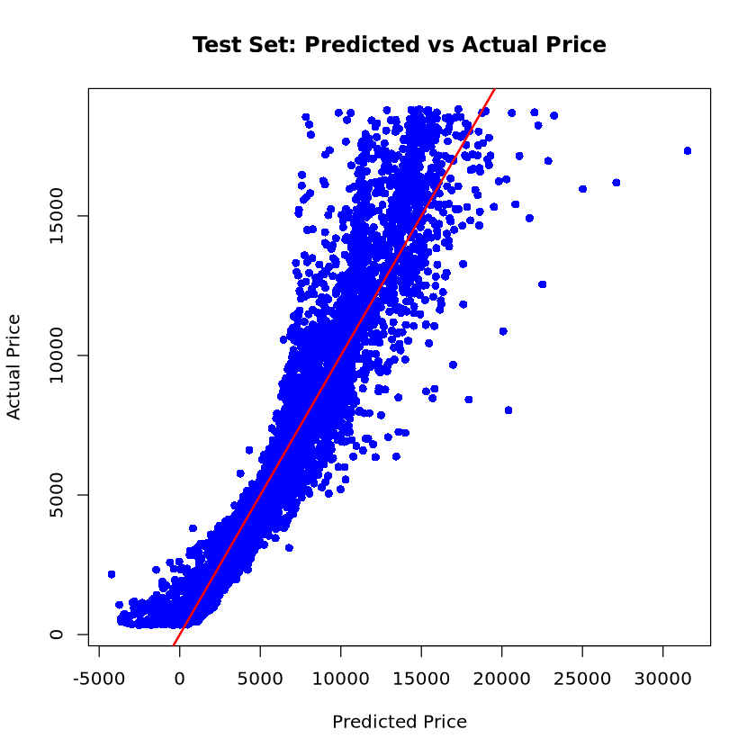

# install.packages("ggplot2")
library(ggplot2)1. imports
2. data
data(diamonds)- cut, color, clarity를 범주형(factor)로 변환
diamonds$cut <- factor(diamonds$cut, ordered = FALSE)
diamonds$color <- factor(diamonds$color, ordered = FALSE)
diamonds$clarity <- factor(diamonds$clarity, ordered = FALSE)- 사용할 변수 선택
diamonds_sub <- diamonds[, c("price", "carat", "cut", "color", "clarity", "depth", "table", "x", "y", "z")]- 데이터 셔플
set.seed(2025) # 재현성 확보
shuffled_idx <- sample(nrow(diamonds_sub))
diamonds_sub <- diamonds_sub[shuffled_idx, ]- 데이터 분할(70% train, 30% test)
n <- nrow(diamonds_sub)
n_train <- round(0.7 * n)train_data <- diamonds_sub[1:n_train, ]
test_data <- diamonds_sub[(n_train + 1):n, ]3. 모델 학습
model <- lm(price ~ carat + cut + color + clarity + depth + table + x + y + z, data = train_data)summary(model)
Call:
lm(formula = price ~ carat + cut + color + clarity + depth +
table + x + y + z, data = train_data)
Residuals:
Min 1Q Median 3Q Max
-21193.1 -592.3 -184.2 379.4 10019.2
Coefficients:
Estimate Std. Error t value Pr(>|t|)
(Intercept) 2523.821 486.284 5.190 2.11e-07 ***
carat 11166.722 57.804 193.183 < 2e-16 ***
cutGood 569.597 40.501 14.064 < 2e-16 ***
cutVery Good 708.343 38.926 18.197 < 2e-16 ***
cutPremium 752.076 38.947 19.310 < 2e-16 ***
cutIdeal 810.282 40.340 20.086 < 2e-16 ***
colorE -207.868 21.473 -9.681 < 2e-16 ***
colorF -253.152 21.671 -11.681 < 2e-16 ***
colorG -476.298 21.273 -22.390 < 2e-16 ***
colorH -967.243 22.517 -42.956 < 2e-16 ***
colorI -1462.027 25.326 -57.728 < 2e-16 ***
colorJ -2379.519 31.042 -76.655 < 2e-16 ***
claritySI2 2660.652 51.379 51.784 < 2e-16 ***
claritySI1 3638.154 51.113 71.179 < 2e-16 ***
clarityVS2 4247.626 51.407 82.627 < 2e-16 ***
clarityVS1 4551.296 52.258 87.093 < 2e-16 ***
clarityVVS2 4918.192 53.839 91.350 < 2e-16 ***
clarityVVS1 4987.707 55.359 90.097 < 2e-16 ***
clarityIF 5297.251 59.893 88.445 < 2e-16 ***
depth -69.236 5.335 -12.979 < 2e-16 ***
table -28.518 3.496 -8.157 3.55e-16 ***
x -964.321 35.990 -26.794 < 2e-16 ***
y -2.101 19.444 -0.108 0.914
z -40.404 35.011 -1.154 0.248
---
Signif. codes: 0 ‘***’ 0.001 ‘**’ 0.01 ‘*’ 0.05 ‘.’ 0.1 ‘ ’ 1
Residual standard error: 1129 on 37734 degrees of freedom
Multiple R-squared: 0.9198, Adjusted R-squared: 0.9197
F-statistic: 1.881e+04 on 23 and 37734 DF, p-value: < 2.2e-164. 모델 평가
- test_set 예측
test_pred <- predict(model, newdata = test_data)- test 성능 평가(RMSE 계산)
test_rmse <- sqrt(mean((test_pred - test_data$price)^2))
cat("Test RMSE:", round(test_rmse, 2), "\n")Test RMSE: 1132.54 - 예측 vs 실제 산점도 (test set)
plot(test_pred, test_data$price,
xlab = "Predicted Price", ylab = "Actual Price",
main = "Test Set: Predicted vs Actual Price",
pch = 16, col = "blue")
abline(0, 1, col = "red", lwd = 2) # 완벽한 예측선 (y = x)
- RMSE값 그래프에 추가
text(x = max(test_pred) * 0.7,
y = min(test_data$price) * 1.2,
labels = paste0("Test RMSE = ", round(test_rmse, 2)),
pos = 4,
col = "black",
cex = 0.9)ERROR: Error in text.default(x = max(test_pred) * 0.7, y = min(test_data$price) * : plot.new has not been called yet
Error in text.default(x = max(test_pred) * 0.7, y = min(test_data$price) * : plot.new has not been called yet
Traceback:
1. text(x = max(test_pred) * 0.7, y = min(test_data$price) * 1.2,
. labels = paste0("Test RMSE = ", round(test_rmse, 2)), pos = 4,
. col = "black", cex = 0.9)
2. text.default(x = max(test_pred) * 0.7, y = min(test_data$price) *
. 1.2, labels = paste0("Test RMSE = ", round(test_rmse, 2)),
. pos = 4, col = "black", cex = 0.9)- 새로운 데이터 생성
new_data <- data.frame(
carat = c(0.5, 1.2),
cut = factor(c("Ideal", "Premium"), levels = levels(diamonds$cut)),
color = factor(c("E", "H"), levels = levels(diamonds$color)),
clarity = factor(c("VS2", "SI1"), levels = levels(diamonds$clarity)),
depth = c(61.5, 62.2),
table = c(55, 58),
x = c(5.1, 6.9),
y = c(5.2, 7.1),
z = c(3.15, 4.35)
)- 새로운 데이터 예측 및 결과 출력
predicted_prices <- predict(model, newdata = new_data)new_data$predicted_price <- round(predicted_prices, 2)
new_data| carat | cut | color | clarity | depth | table | x | y | z | predicted_price |
|---|---|---|---|---|---|---|---|---|---|
| <dbl> | <fct> | <fct> | <fct> | <dbl> | <dbl> | <dbl> | <dbl> | <dbl> | <dbl> |
| 0.5 | Ideal | E | VS2 | 61.5 | 55 | 5.1 | 5.2 | 3.15 | 2074.45 |
| 1.2 | Premium | H | SI1 | 62.2 | 58 | 6.9 | 7.1 | 4.35 | 6541.83 |